Season 1
Release date October 2018
Director Yasuhito Kikuchi
As players of Monster Hunter and Dungeons and Dragons know, the slime is not exactly the king of the fantasy monsters. So when a 37-year-old Tokyo salaryman dies and wakes up in a world of dragons and magic, he's a little disappointed to find he's become a blind, boneless slime monster.
Mikami's middle age hasn't gone as he planned: He never found a girlfriend, he got stuck in a dead-end job, and he was abruptly stabbed to death in the street at 37. So when he wakes up in a new world straight out of a fantasy RPG, he's disappointed but not exactly surprised to find that he's not a knight or a wizard but a blind slime demon. But there are chances for even a slime to become a hero..
| Chapter | Abstract | Image |
|---|---|---|
| Chapter 1 | The Storm Dragon, Veldora Satoru Mikami, a businessman, is stabbed by a criminal on the street and killed. When he regains consciousness in the darkness, he finds that he's been reincarnated as a slime! With nothing better to do, he spends his time devouring all the rare herbs and precious ores he comes across. As he does, he encounters the Storm Dragon Veldora, who was sealed in this cave 300 years ago by a hero's "Unlimited Imprisonment" skill. He's frightened at first, but as they talk, he becomes friends with the long-isolated Veldora |
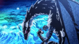 |
| Chapter 2 | Meeting the Goblins The slime Satoru Mikami and the Storm Dragon Veldora decide to give each other names. Veldora gives the slime Mikami the name "Rimuru," and Rimuru comes up with a family name for both of them: "Tempest." Then Rimuru uses his Predator skill to take Veldora into his body and analyze the "Unlimited Prisonment" seal in hopes of breaking it... but this action sends a shock through the nations surrounding the Jura Forest. With Veldora gone, there's a chance that the larger nations could become bold and invade the smaller provinces. With no knowledge of this, Rimuru leaves the cave and meets some goblins. |
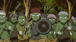 |
| Chapter 3 | Battle at the Goblin Village After leaving the cave, Rimuru encounters a village of Goblins under attack by a clan of Direwolves. Caught in the heat of the moment, Rimuru agrees to help the Goblins in their battle. That night, the Direwolves arrive to try to take over as the new rulers of the Jura Forest! |
|
| Chapter 4 | In the Kingdom of the Dwarves Arriving at Dwargon with Gobta the goblin, Rimuru ends up getting in a fight with some thugs and thrown in jail. Rimuru is eventually set free after providing the guards with potions and is introduced to Kaijin the blacksmith. Using the magisteel ore he had gathered in the caves, Rimuru helps Kaijin to fulfil an order of longswords in exchange for his help in providing artisans for the goblin village. As Rimuru and the dwarves celebrate at an elf bar, a figure approaches. |
|
| Chapter 5 | Hero King, Gazel Dwargo A fortune teller elf decides to predict Rimuru's destined one, showing him a vision of a girl parting ways with her family. When Vesta, the minister who ordered the swords, arrives and insults Rimuru, Kaijin punches him in anger, resulting in both him, Rimuru, and the other dwarves getting arrested and put on trial. During the trial, the hero king Gazel Dwargo, who has a history with Kaijin, exiles him and his men, who join Rimuru as his team of artisans. After also exiling Vesta for his dishonest actions, Gazel, noticing Rimuru's connections with Veldora, dispatches a ninja to follow him. |
|
| Chapter 6 | Shizu After being exiled from the nation of Dwargon, Rimuru and the dwarves return to the village of the goblins. After their arrival they a lot of goblins from other villages who Rimuru proceeds to name. A few days after a few adventurers arrive after being chased by fire ants and are saved by Rimuru, with one of the adventurers being another world traveler. While the other adventurers are having a meal he has a talk with her about their old home while riding on Ranga. |
|
| Chapter 7 | Conqueror of Flames Shizu recalls the anguish she felt when the Ifrit inside her killed her friend after considering her an enemy. Just as Shizu prepares to leave with the adventurers, Ifrit once again takes control of her and unleashes his flames upon the village. With his water attacks proving ineffective, Rimuru copies Eren's ice magic spell to take care of Ifrit's minions. Discovering that he is immune to fire attacks, Rimuru uses his Predator ability to swallow Ifrit, separating him from Shizu in the process. |
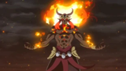 |
| Chapter 8 | Inherited Will Shizu tells Rimuru about someone known as The Hero who took her in and showed her the right path before mysteriously disappearing one day. Sensing her life is coming to an end, Shizu, not wishing her body to remain in this world, asks Rimuru to eat her, giving him the ability to take a human form. As Rimuru decides to seek out information on Leon in order to convey Shizu's final words to him, a masked man named Gelmud recruits an orc that he names Geld with the intention of bringing forth a Great Orc Disaster in the forest. |
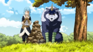 |
| Chapter 9 | Attack of the Ogres Rimuru and the Goblins' village is developing nicely. The Dwarves are building all kinds of houses and furniture, and the local Goblin Lords have appointed Rigurd as the Goblin King. As Rimuru watches everything comes together, he decides to return to the cave and test the skills he received from Shizu. While there, he receives a request for help from Ranga through Thought Communication, and he rushes back to find his friends facing six Ogres. One of them orders Rimuru to "reveal his true identity." What is going on in the Great Forest of Jura? |
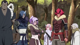 |
| Chapter 10 | The Orc Lord" Rimuru's village enjoys their banquet while he, Rigurd, Rigur, Gobta, and Kaijin hear about the Ogres' story from their young master, after which he suggests them becoming his subordinates to increase their overall fighting potential. After a night's thought, the young master agrees to it and Rimuru decides to name all of them causing their evolution. Meanwhile, an army of 200,000 Orcs makes their way towards the Lizardmen's residence who attempt preparations for backup to fend them off, realizing the enemy leader might be the legendary fearsome monster, the Orc Lord. |
 |
| Chapter 11 | Gabiru Is Here! Gabiru arrives at Rimuru's village to try and get everyone to serve under him to fight the orcs. Gobta is sent in to duel against Gabiru, defeating him quickly with the skills he's learned and forcing the lizardmen to retreat. Later, Rimuru is approached by a dryad named Treyni, who asks him to defeat the Orc Lord. |
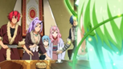 |
| Chapter 12 | The Gears Spin Out of Control Treyni explains that the Orc Lord has used a unique skill "Starved" on the Orcs, causing them to constantly crave sustenance, go berserk, and even eat their own to gain more power. Accepting Treyni's request, Rimuru sends Souei to negotiate with the lizardmen for an alliance. As the chieftain urges his soldiers not to engage in battle with the orcs until Rimuru's group arrives, Gabiru, swayed by the words of Gelmud's messenger Laplace, usurps the chieftain's position and leads the lizardmen into a direct attack on the orcs, unaware of the Orc Lord's true power. |
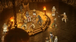 |
| Chapter 13 | The Great Clash Rimuru and the others make their way towards the Lizardmen tribe while Souei discovers their Head Guard fighting a bunch of Orcs, after saving whom, Rimuru established their alliance and immediately made their way into battle. While Gabiru was losing a one-on-one against an Orc General, Gobta, Ranga, and the Goblin Riders come to the rescue. As the Kijin and Ranga massacred many of the Orcs with powerful wide-range attacks and Souei rescues the Lizardman Chieftain, a furious Gelmud begins flying to the scene and Rimuru spots the Orc Lord, thus leading to the final battle. |
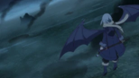 |
| Chapter 14 | The One Who Devours All Gelmud arrives and attacks those who foiled his plans, only to have Rimuru fend them off and healing those he injured. He orders Geld to save him, eat others and evolve into an Orc Disaster and a Demon Lord. Remembering the first task he was given after being named, he kills and eats Gelmud as the quickest method to evolve. He and Rimuru battle as the two devour each other, resulting in Rimuru's victory as he appeases the fading guilt-driven Geld into the afterlife. |
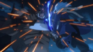 |
| Chapter 15 | The Jura Forest Alliance Rimuru and co, Treyni, the Lizardmen, and the Orcs discuss the future and form the Jura Forest Alliance with Rimuru as the Chancellor. Meanwhile, with plans gone awry, Demon Lord Clayman cooks up another scheme. Three months pass, and the village has advanced a lot, with Gazel Dwargo suddenly giving a surprise visit with his army. After a brief duel to testify Rimuru's character, they drink that night and decide on a treaty with Armed Nation Dwargon, thus declaring and establishing their developing village as a new nation named the Jura Tempest Federation. |
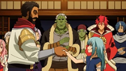 |
| Chapter 16 | Demon Lord Milim Attacks Gazel Dwargo brings over Vesta as a researcher while Gabiru and other Lizardmen join Tempest and are named. Everyone gets assigned to their own posts, wherein the meantime, Demon Lords Clayman, Frey, Carrion, and Milim Nava watch a recording of Rimuru's battle against Geld. Agreeing to cancel the non-aggression pact on the Jura Forest with these other Demon Lords, Milim arrives at Tempest where she fights his top subordinates but finally losing to Rimuru by the temptation of honey. The two of them become (best) friends and Milim decides to live there, unbeknownst to Rimuru about the imbalance of the power struggle between the Demon Lords this just caused. |
|
| Chapter 17 | The Gathering Vesta succeeds in developing a full potion to equal Rimuru's potions, prompting Rimuru to attempt negotiations to develop low potions in the city. Just then, Phobio, beastkeeper of the demon lord Carrion, comes to Tempest with the intent of taking it over, but is promptly dealt with by Milim before Rimuru resolves things peacefully. Offering Milim a new weapon in exchange for information, Rimuru learns that the other demon lords have their sights set on him for foiling their plan to create a puppet demon lord. Later, the Border Survey Corps led by a man named Youm, joined Eren's party, come to Tempest, where Rimuru asks them to take credit for defeating the Orc Lord. Meanwhile, the demon lord Clayman takes an interest in a powerful beast known as Charybdis and sends Tear the harlequin to investigate. |
|
| Chapter 18 | Evil Creeps Closer While Phobio fumes over his humiliation at Milim's hands, Tear and Footman, two of Clayman's harlequin, approach and convince him to become a Demon Lord himself so he can get revenge on Milim. All he must do is let Charybdis possess his body and maintain control. Phobio breaks the seal on Charybdis. Tear reveals she was under orders to revive Charybdis and send it Milim's way. Treyni's sister, Trya, warns Rimuru of the revival. Born from a cloud of Vledora's magicules, Charybdis is the mindless ruler of the skies, focused only on destruction. It has summoned thirteen Megalodon from the Spirit World to aid in its rampage and is heading to Jura. Rimuru and the Dwargon Empire prepare for battle. |
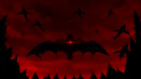 |
| Chapter 19 | Charybdis Assisted by 100 Pegasus Knights from Dwargon, Rimuru's forces destroy the Megalodons and attempt to destroy Charybdis with a full scale attack, but fail. Rimuru then battles Charybdis himself, only to discover it is possessing Phobio, and its true target is Milim. By Rimuru's request, Milim defeats Charybdis while sparing Phobio's life. After the battle, Phobio apologizes for all the trouble he caused, and his master, the Demon Lord Carrion, establishes a non-aggression pact with Tempest. Rimuru and the others finally discover that all the troubles they had faced recently were caused by Clayman's harlequin. |
|
| Chapter 20 | Yuuki Kagurazaka Tempest celebrates its victory against Charybdis and treaty with Yuurazania where Rimuru and Milim have a conversation about the perks of becoming a Demon Lord. Suddenly Milim remembers she has something to do and leaves abruptly, promising to let the other Demon Lords know not to interfere with Tempest. That night, Rimuru dreams about Shizu's regret and his promise to help five children, thus deciding to head to the Ingracia Kingdom with Ranga. There he meets with the Grandmaster of Freedom Association Yuuki Kagurazaka and talks about their manga, anime, games and ultimately Shizu and Rimuru's objective. |
|
| Chapter 21 | Shizu-san's Students Shizu's students don't show Rimuru much respect so he decides to show them the difference in their skill in a series of duels. Kenya uses fire magic, Chloe water magic, Gale fires magic bullets, Ryota uses body enhancements, and Alice uses puppetry to control toys to attack him. They lose and accept him as sensei. Rimuru visits Treyni, believing the children will survive if inhabited by superior spirits since Shizu was Summoned as a child but lived to adulthood, possibly because of Ifrit. Treyni directs him to the Dwelling of Spirits, but with the Queen of Spirits the dryads once served dead, they have lost their link to it and no longer know the entrance. While on a picnic with the students, they see a Sky Dragon heading to the capital and Rimuru interferes and eats it with Gluttony. Mjolmire, a merchant Rimuru's appearance saved, invites them to dinner. Mjolmire knows who Rimuru is and Rimuru invites him to come to Tempest to help them sell their wares. He agrees. Mjolmire's assistant asks the Queen of Spirits to protect the children after dinner. She tells a curious Rimuru she came from a village near the Dwelling of Spirits. He, Ranga, and children head to its location |
|
| Chapter 22 | Conquering the Labyrinth Rimuru and the five children enter the Labyrinth, only to be attacked by a Golem controlled by a mischievous spirit, Ramiris. Rimuru destroys it, forcing Ramiris out and her revealing the doubtful information of her being the Fairy Queen and a Demon Lord. Rimuru explains the situation with the kids and thus encourages each of them to call for a spirit to help stabilize their condition. |
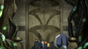 |
| Chapter 23 | Saved Souls The five children pray and call for their spirits and stabilize their energies, after which Rimuru repays Ramiris' by making a golem and having a Greater Demon possess it to serve her before leaving. After returning, Rimuru recalls everything that happened in the season while a looming Arch Demon observes him from the spiritual world. Finally, as he returns to Tempest, he is followed by a woman in armored clothing. |
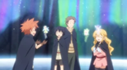 |
| Chapter 24 | Black and a Mask A dying woman summons a Daemon as revenge against the one who betrayed her and her comrades. Shizue Izawa and many other adventurers come in Filtwood to exterminate a very powerful Daemon, rumored to be an Arch Daemon. Those not willing to fight the overwhelming foe are killed by the kingdom, due to which the 'summoned Daemon' causes a ruckus and fights against Shizue. Realizing the mask she wore is an artifact that transcends space and time, the Daemon 'retreats'. At night, Shizue is brought to the throne room, where it is revealed that the Kingdom is under the rule of the Daemon they were ordered to exterminate and that the whole commotion in the day was an act to lure and kill off powerful obstacles of the Daemon, such as Shizue. The summoned Daemon, 'Noir', reappears and kills the Daemon as per his original contract, and makes a deal with Shizue stating that he had killed the Daemon after which she had killed off 'Noir'. Later on, it is found that 'Noir' had been tracking the mask from the Spirit World, eventually finding Rimuru; where it is revealed that this Daemon, 'Noir', shall be later summoned by him and be given the name 'Diablo'. |
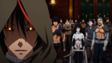 |